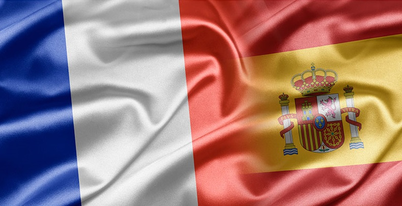
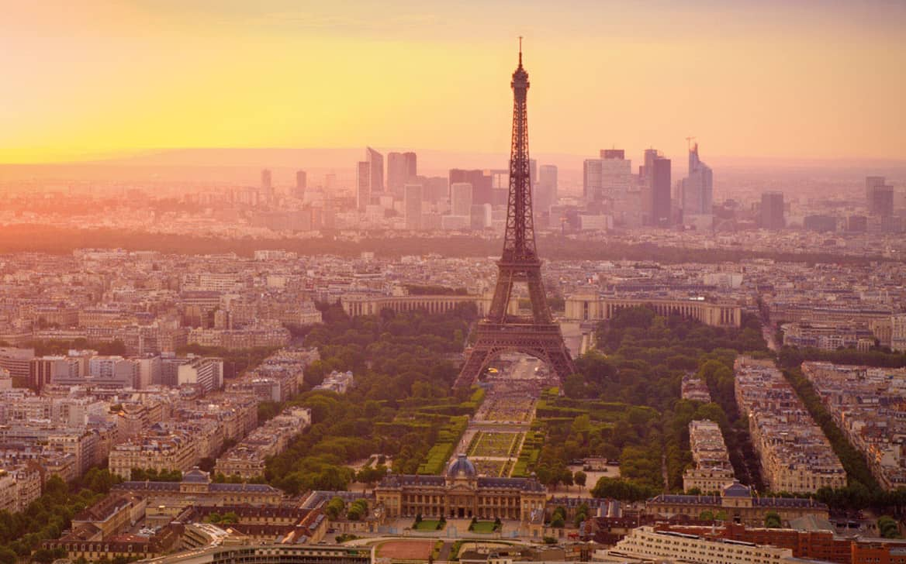
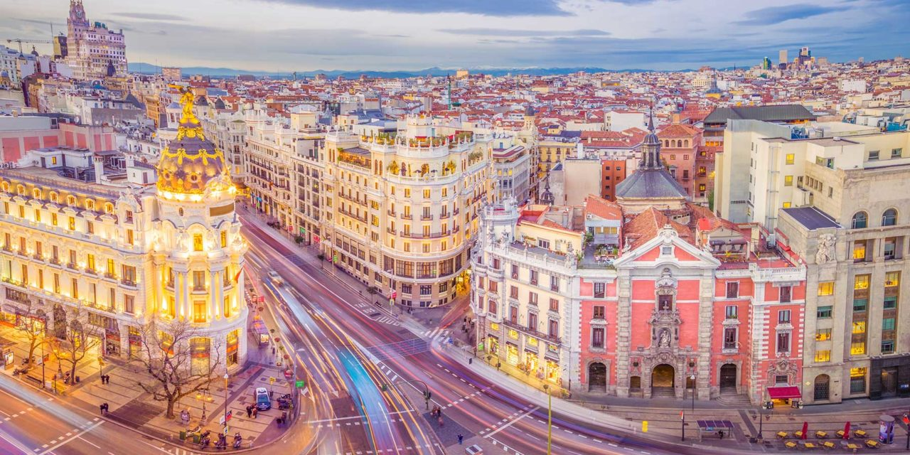

 La popularidad de Francia como destino MICE (Encuentros, Incentivos, Conferencias y Exposiciones) es el resultado de una feliz combinación de factores. 89 millones de visitantes (un 3% más que el año anterior) se vieron atraídos por Francia, desde ciudades como París a los castillos del Loira. La facilidad de acceso, sus infraestructuras del más alto nivel, hermosos paisajes y unos recintos únicos para acoger eventos son factores que refuerzan la posición de Francia como líder en este sector. El inconfundible arte de vivir francés, su patrimonio cultural de gran riqueza y su exquisita gastronomía son un plus para disfrutar de un evento de negocios de calidad. Francia es un país donde la tradición es atrevida, el arte rima con modernidad, la gastronomía innova y el pasado se da la mano con el presente. Festivales, exposiciones, ferias, espectáculos. se viven experiencias únicas, como esquiar, practicar el senderismo, canyoning, parapente, vela y mucho más. También juegue en uno de los 713 campos de golf de Francia o deje que le mimen pasando un día en un spa.La seguridad de los visitantes es una de las principales prioridades en Francia. El gobierno francés dispone de un sistema nacional de seguridad conocido como "Vigipirate". Cuando el país se encuentra en un nivel alto de alerta, el sistema permite incrementar la presencia de la policía y del ejército en los aeropuertos, estaciones de tren y de metro, escuelas, los principales monumentos y lugares turísticos y organismos públicos.
 83 millones de visitantes internacionales (un 1% más que el año anterior) llegaron a España, disfrutando de su gastronomía, de la riqueza histórica de sus ciudades y, naturalmente de destinos de sol permanente. Como destino turístico, España no sólo tiene buena materia prima (buenas costas, sol, gastronomía y cultura...), también sabe gestionar sus fortalezas y tiene unas buenas infraestructuras que, de hecho, nos convierten en el país del mundo más competitivo en turismo. Los recursos naturales, los bienes culturales y la hospitalidad de las personas son sólo algunos aspectos que han contribuido a que España no tenga rival como el mejor destino turístico del mundo. Los numerosos visitantes internacionales pueden confiar en las buenas infraestructuras aeroportuarias, con una amplia variedad de compañías aéreas que suministran una alta conectividad. Otro punto a favor es el turismo de congresos, con Madrid y Barcelona como dos de las ciudades donde más encuentros de este tipo de celebran y que mejor preparadas están para acogerlos. Las llegadas de turistas internacionales crecieron un 7% en 2017, el aumento más alto desde 2010, según la Organización Mundial del Turismo (OMT). La mayoría de los turistas son de China, Estados Unidos y Alemania. El incremento de viajeros se hizo sentir en la economía mundial, en donde las exportaciones generadas por el turismo, llegaron a $ 1,6 billones de dólares en 2017, convirtiendo el turismo en el tercer sector de exportación más grande del mundo.